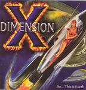

| Artist: | Dimension X |
| Title: | So...This Is Earth |
| Label: | Unicorn Digital Inc. UNCR-5016 |
| Length(s): | 51 minutes |
| Year(s) of release: | 2005 |
| Month of review: | [11/2005] |
| 1) | Why | 6.01 |
| 2) | Open Letter | 3.35 |
| 3) | Corporate Ladder | 5.12 |
| 4) | Introspection | 1.37 |
| 5) | Train Wreck | 5.45 |
| 6) | Xeno's Paradox | 16.45 |
| 7) | Intrigue | 6.03 |
| 8) | Nothing's Changed | 6.41 |
On Open Letter, the band transforms itself to a progmetal band. The tempo is high, the rhythm guitars prominent. Melodically, this is not as interesting, and in the lower regions the vocalist does not come out as well. He does alternate with the higher regions. Still, compared to the previous song this is a step back.
The keys continue to have more of a supporting role on Corporate Ladder. The Echolyn remains the dominant one, also in the vocals, although less precise, and heavier. The song has some nice bass work, and for some reason I also hear some neo-progressive tendencies. Ah, it is meander time in the middle. At least, the keyboards get a place to take the lead. The vocoded vocals are a nice touch. I do get the impression that the vocal production could be better, but that might as well be a consequence of the very busy wall of sound these guys deliver. Introspection is a really nice breather, think Hackett's Hammer In The Sand. Piano, string like keyboards and excellently melodic. Short too. Train Wreck is not so quiet. Indeed, we get the by now familiar mix of busy progmetal and symphonic rock, the latter most evident in the anthemic passages. What I do not really like is that the vocal seem to lie below the instrument most times. Is that on purpose?
Xeno's Paradox is easily the epic of this album, one third of its length. The opening is richly atmospheric, with tension being built via the guitar. This is epic progmetal with pumping bass, raging drums and heavy rhythm guitars. Just passed the five minute mark, we get to stiller waters. The piano enters the picture, and the vocalist does some good things (usually the parts that remind me somewhat of Echolyn). The middle part is really excellent, with spoken words (in German no less), and great tension building through the use of piano and well sung vocals. The next part is rather up-beat again, I am reminded of Nice Beaver here. I still think some of these vocals should lie more on top of the music, now they sound so far away, it does not seem fitting. This high paced part features some extensive soloing and the usual tempo changes. All in all, a good epic track.
We close with two mid length tracks, the first of which is Intrigue. This song does not depart much from what we heard so far, being in the vein of the diverse progrock of Nice Beaver, including a keyboard solo and a nice combo of piano and bass. Nothing's Changed is a bit more groovy, at least in pace. The guitarist continues to think he is playing in a progmetal band. It does make the band hard to place, but on the other hand, maybe it widens their audience to include both progrockers and progmetalheads. Hopefully, it doesn't lead to the exclusion of both, but I think that unlikely.